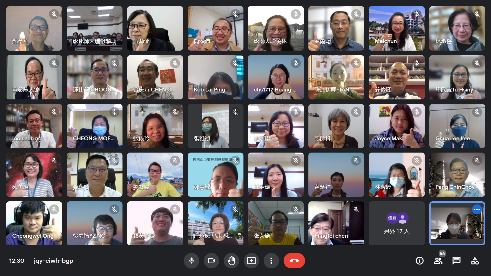

数理创意教学硕士在职境外专班开课礼
董总继2019年开办跨学科教专课程（即华文独中数理教育专业文凭课程）后，再次与台湾国立彰化师范大学合作，办理跨学科的境外硕士专班。这个硕士专班于2022年3月8日先开课，隔日才举行开课典礼。因疫情关系，彰师大师长未能前来我国实体授课，因此首两门课以线上授课模式进行。硕士专班迎来23位新生，他们来自10所华文独中的教师和董总的学科人员。
董总主席陈大锦在开课典礼致词时表示，董总于2018年8月，正式发布《马来西亚华文独中教育蓝图》，其中跨学科学习和推动科技融入教学是当前华文独中教育发展的新方向。因此，董总特别办理此硕士专班，希望能建构和强化华文独中数理科教师在探究创意教学和科技融入教学等各方面的能力，落实“教师乐教、孩子爱学”的理念。
彰师大校长吴明飞致词时表示，非常珍惜与马来西亚华文独中的长期合作，期许未来能延续这样的关系。此外，科学教育研究所所长林淑梤和6位师长，分别给予新生勉励，期许新生们在这为期3年的硕士专班能收获满满。
开课礼的出席者尚包括，彰师大进修学院吴明政院长及院内同仁，董总秘书长庄俊隆、财政杨安山、副执行长（总务处）锺伟前、副执行长（学务处）曾庆方及行政部门同仁、董教总华文独中工委会教师教育委员会主任张永庆校长、副主任吴维城校长、庄琇凤校长及委员彭进财校长、张梅莲校长，以及硕士专班的承办学校吉隆坡坤成中学蔡莉莉校长及高丽萍副校长。